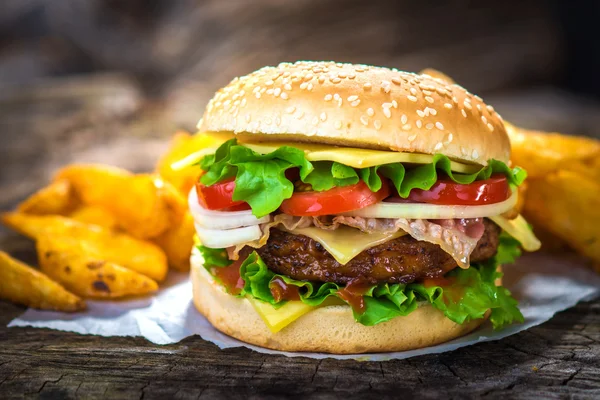

Steak Burger

How to make a perfect Steak Burger
Today we're going to learn how to make perfect Steak Burger. We recommend Grilling Steak Burgers for this Recipe
We recommend serving this burger Medium Rare - Medium
Ingredients
- Raw Steak Burger 1/4 LB Patties
- Fresh Buns
- Patty Seasoning
- Cheese, Additional Toppings Optional
Steps
- Heat Grill to High Temperature
- Grill on High for 6 Minutes to Sear
- Flip Burger, then lower Heat to Medium
- Cook for an additional 10 minutes
- cook to desired temp, check for 165 F internal temp
Return to Main Page